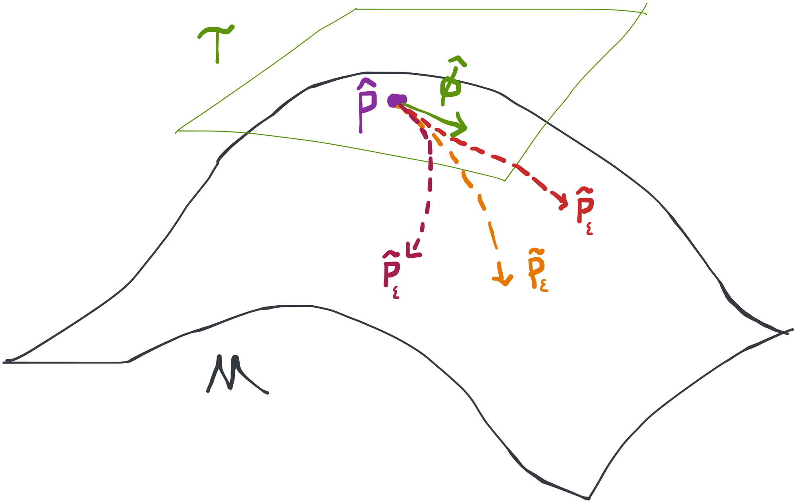

Introduction to Modern Causal Inference

This book is a work in-progress! Everything about it is subject to change.
Goals and Approach
Our goal is to get people with any amount of experience in formal mathematics past undergraduate probability to be able to take a vaguely-defined scientific question, translate it into a formal statistical problem, and solve it by constructing a tool that is optimal for the job at hand.
This book is not particularly original! There are many texts and courses that share the same philosophy and have substantial overlap in terms of the pedagogic approach and topics. In particular, we owe a lot to the biostatistics curriculum at UC Berkeley and to more encyclopedic texts like Van der Laan et al. (2011). Nonetheless, we think that the particular selection of topics and tone in this book will make the content accessible enough to new audiences that it’s worthwhile to recombine the material in this way. Think of this book as just another open window into the exciting world of modern causal inference.
Philosophy
This book is rooted in the philosophy of modern causal inference. What sets this philosophy apart are the three following tenets:
- The first is that for all practical purposes, the point of statistics is causal inference. Ultimately, we humans are concerned with how to make decisions under uncertainty that lead to the best outcome. These are fundamentally causal questions that ask what if we did A instead of B? The machinery of statistical inference is agnostic to causality, but that doesn’t change the fact that our motivation in using it isn’t. Therefore there is little point in shying away from causal claims because noncausal claims are not often of any practical utility.
- That leads to the second, often misunderstood point, which is that there is no such thing as a method for causal inference. This isn’t a failing of the statistics literature so much as a failing of the naive popularization of new ideas (e.g. blog posts, low-quality papers). The process of statistical inference (for point estimation) only cares about estimating a parameter of a probability distribution and quantifying the sampling distribution of that estimate. There is nothing causal about that, and many are surprised to learn that the algorithms used for causal inference are actually identical to those used to make noncausal statements. What makes an analysis causal has little if anything to do with the estimator or algorithm used. It has everything to do with whether or not the researcher can satisfy certain non-testable assumptions about the process that generated the observed data. It’s important to keep these things (statistical inference and causal identification) separated in your mind even though they must always work together.
- The last and perhaps greatest shortcoming of traditional statistics pedagogy is that it generally does not teach you to ask the question that makes sense scientifically and then translate it into a statistical formalism. This is partly because, in the past, our analytic tools were quite limited and no progress could be made unless one imposed unrealistic assumptions or changed the question to fit the existing methods. Today, however, we have powerful tools that can then translate a given statistical problem into an optimal method for estimation in a wide variety of settings. It’s not always totally automatic, but at a minimum it provides a clear way to think about what’s better and what’s worse. It liberates you from the route if-this-kind-of-data-then-this-method thinking that only makes for bad statistics and bad science.
Taken together, these three points give this movement a clear, unified, and increasingly popular perspective on causal inference. We have no doubt whatsoever that this is the paradigm that will come to dominate common practice in the next decades and century.
Pedagogy
The modern approach to causal inference is already well-established and discussed at length in many high-quality resources and courses. So why have yet another book going over the same material?
Well, there are many different kinds of students with different backgrounds for whom different presentation styles work better! We’ve chosen an approach for this particular text that focuses on the following principles:
Rigor with fewer prerequisites. Many students are turned off or intimidated by the amount of mathematical formality that is required to rigorously understand modern causal inference. While you don’t actually need a lot of math to use and understand the ideas, you do need some math to be able to work independently in the field. Since one of our goals is for you to be able to construct your own efficient estimator for a never-before-seen problem, we have to think precisely and not hand-wave away rigor.
For better or worse, the math you need is built on several layers of prerequisites- real analysis, probability theory, functional analysis, and asymptotic statistics (more on that later). In an ideal world, we would all have taken these courses and be prepared for what’s next, but in practice we know many people have gaps in their knowledge.
In this book we try to address that by providing a lot of foundational background information about these topics as they come up. We do our best to build up intuition for the component pieces of things before diving into implications. We lean heavily on figures and natural English prose to explain these concepts alongside the formal mathematical notation. At a minimum, we try to be very clear about what the foundations actually are so that if you don’t understand something you at least know where to look.
Core concepts. Modern causal inference is a huge field. There are so many exciting applications and theoretical developments that it can be hard for students to find their way at first.
We’ve tried to keep thing as short and concise as possible in this book by focusing on core ideas and a limited number of examples. The point of this is to emphasize what is most important and to allow you to learn the fundamentals without getting distracted. That means there are many topics that aren’t covered in this book (see section below), but the idea is that this book will give you the tools and mindset you need in order to continue your learning productively.
A welcoming voice. Modern causal inference is fast-moving and intense. It’s easy to feel like you don’t belong or aren’t good enough to participate. The agnostic, impersonal tone that is best for writing a clear academic paper doesn’t always create the warm, emotional connection that is necessary for us to feel secure and ready to learn.
To deal with that problem, the voice we use throughout this book is informal and decidedly nonacademic. We write in the first person and address you, the reader, directly. Figures are hand-drawn and cartoonish and we have links rather than formal citations. We provide personal commentary alongside agnostic technical material. All of this is deliberate and meant to help you feel comfortable and guided through this world. You are not alone in learning!
Other books may share some or all of these principles to some extent so we’re not claiming that what we’ve done here is entirely unique. We’re trying to create as many inlets as possible for students with different lived experiences. If the approach we take here works for you, that’s great!
If you find this book isn’t for you, that’s also great! Here is a list of other resources that cover some of the same ground:
- Semiparametric Doubly Robust Targeted Double Machine Learning: A Review (Kennedy, 2022)
- Semiparametric Theory and Missing Data (Tsiatis, 2006)
- Targeted Learning (Van der Laan et al., 2011)
- Unified Methods for Censored Longitudinal Data and Causality (Laan & Robins, 2003)
- Causal Inference: What If? (Hernán & Robins, 2010)
Rigor with Fewer Prerequisites
Despite our best efforts, you will need some background material to get the most out of this book. The hard prerequisites listed are non-negotiable (this book will make no sense to you at all if you don’t know what a probability distribution is), but the soft prerequisites are completely optional. We don’t cover these topics here because there are already so many good resources to learn them and there’s no need to reinvent the wheel. We provide the curated references below so you know where to go to fill in the holes in your understanding as you go along.
Hard Prerequisites You’ll need to know probability theory at the undergraduate level. Random variables, expectation, conditional expectation, probability densities should be familiar to you, and ideally you have at least a vague understanding of what convergence in distribution means.
You also need undergraduate multivariable calculus and linear algebra: integrals, derivatives, vectors, etc. should all be well-worn tools at your disposal.
If you’re shaky on these topics, we recommend Khan Academy. We also encourage you to check out the real analysis and measure-theoretic probability resources listed below, which will provide you with a much more useful, conceptual understanding.
Soft Prerequisites The following topics aren’t necessary to grasp the arc of the arguments we’ll make, but a fully rigorous understanding isn’t possible without them. As we go along, we’ll provide parenthetical commentary to elucidate concepts from these subjects that you may not be familiar with. We suggest attempting to read and understand this book all the way through and taking notes on the places where you feel like you’re missing something. This will help you prioritize your time if you choose to fill in the gaps. None of this material is beyond you, we promise. It just takes a little time to work through it.
These books and videos give what we think is the most self-contained treatment of their respective topics that is in line with the didactic approach taken in this book. They tend to have a more conversational tone, provide more background and intuition to the reader, and have plenty of worked examples. As always, however, there are many alternatives that may work better for you depending on your needs. These subjects should be tackled in the order they are listed here: